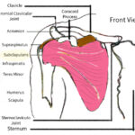

The Shoulder
The Ultimate Shoulder and Massage Reference
Here you will find the collection of pages and blog entries I have written over the years about the shoulder: rotator cuff, rhomboids, trapezium, and more! Please look around and you’ll find information that will be useful to you!
The Rotator Cuff
We often hear about the rotator cuff, but how many of us know what that means? I mean, I do, after all, that’s what you pay me for, right?
Rotator Cuff Defined
The Rotator Cuff is the group of four muscles that form a… wait for it… wait… wait… cuff around the scapula (shoulder blade). The job of the rotator cuff is, well, rotating the shoulder, specifically the glenohumeral joint - the shoulder socket where the humerus (arm bone) attaches to the scapula. From that joint comes the wonderful movement that lets us climb, hold a baby, play tennis, bowl, make potter, type, swim, and any other upper body activity.



Anatomy of the Rotator Cuff
The rotator cuff comprises four muscles: the supraspinatus, infraspinatus, teres minor, and subscapularis. Let’s talk about them!
But first, let’s talk about the scapula
The scapula is a bone, aka shoulder blade, that is sited on the upper posterior torso. It floats atop our ribs, and directly joins the clavicle (collar bone) and humerus (arm bone).
There are 26 muscles that attach to the scapula, but that’s for another time.
Landmarks
- Spine of the scapula The spine of the scapula is that bony ridge that runs along the scapula parallel to the ground. If you reach over your opposite shoulder, you can feel that long ridge of bone at the top of your shoulder blade - that’s the spine of the scapula. The trapezius and deltoid muscles use it for attachments.
Fossa
A fossa is a basin on a bone. A curved plane of bone that functions as a broad attachment point for muscle. For the scapula there are three:
-
Supraspinus Fossa Supra = superior or upper, headward. Spinus = refers to the spine of the scapula.
Put it together and it describes the location of the supraspinatus. You can feel it clearly: go back to the spine of the scapula with your four fingers, slide them along the spine from side to side. Now, bring your fingers towards the front of your body slightly, so that you are no longer on the spine. You should feel a long depression with a dense muscle. That is the supraspinus fossa, and the muscle is the
Supraspinatus
I know I am dating myself, but if you have ever driven a manual transmission car, or a motorcycle, and put it into first gear. That’s the supraspinatus. It performs abduction - it’s job is to initiate the motion of abduction, or moving your hanging arm away from the body out to the side. It’s responsible for one third of the torque of that movement, all from a very small slender muscle.
Supraspinatus Anatomy

Origin: The supraspinatus muscle originates from the supraspinus fossa of the scapula.
Insertion: It inserts onto the greater tubercle of the humerus.
Action: The supraspinatus initiates abduction of the arm and assists in stabilizing the shoulder joint, particularly during overhead movements.
Infraspinatus Muscle

Origin: Arising from the infraspinous fossa of the scapula.
Insertion: It inserts onto the greater tubercle of the humerus, just below the supraspinatus.
Action: The infraspinatus externally rotates the shoulder joint and helps stabilize the humeral head within the glenoid cavity during arm movements.
Teres Minor Muscle

Origin: Originating from the lateral border of the scapula.
Insertion: It inserts onto the greater tubercle of the humerus, inferior to the infraspinatus.
Action: The teres minor aids in external rotation of the shoulder joint and provides additional stability during arm movements, particularly when the arm is raised or rotated outwards.,
Subscapularis Muscle

Origin: Arising from the subscapular fossa of the scapula.
Insertion: It inserts onto the lesser tubercle of the humerus.
Action: The subscapularis muscle internally rotates the shoulder joint and contributes to the stabilization of the humeral head within the glenoid cavity.
Shoulder Pain Articles
Exploring Further
For a deeper understanding of the anatomy and function of the four rotator cuff muscles, I invite you to explore our comprehensive blog posts dedicated to each muscle:
-
Supraspinatus Muscle: Anatomy and Function - Learn more about how the supraspinatus muscle contributes to shoulder stability and movement.
-
Infraspinatus Muscle: Anatomy and Function - Discover the role of the nfraspinatus muscle in shoulder rotation and stability.
-
Teres Minor Muscle: Anatomy and Function - Explore the function of the teres minor muscle in facilitating arm movements and shoulder stability.
-
Subscapularis Muscle: Anatomy and Function - Delve into the anatomy and function of the subscapularis muscle, vital for internal rotation and shoulder stability.
Conclusion
In conclusion, the four rotator cuff muscles play a crucial role in maintaining shoulder function and stability. Understanding their anatomy and function is essential for athletes, healthcare professionals, and anyone interested in optimizing shoulder health. For more in-depth information on each muscle, visit our blog posts linked above and empower yourself with knowledge about your body’s intricate mechanisms.
Area of Practice
Zero Point Advanced Myofascial Release
Learn about my medical massage practice, and how it can help you.
Sports Massage
Whether you’re a weekend warrior, to an elite competitive athlete, I offer a full range of Sports Massage options to meet your needs:
-
Training
-
Pre-event
-
Post-event
Tidal Wave Relaxation
If you are looking for a deeply relaxing experience, my Tidal Wave Massage will take you into a state of relaxation you’ll not get elsewhere.
Read more…
Pregnancy Massage
Your expectancy is unique from any other, and I work with you to create an experience and journey through your gestation all the way to birth, and in your postpartum period to make the recovery from the birthing experience easy and feeling great!

I pay attention to detail, so your bodywork journey is full of great experiences
✓ Online Booking and forms
✓ Flexible scheduling options
Paul’s Award Winning
Massage Blog
Recover from Rotator Cuff injury
The dreaded words no one wants to hear, “you’ve got a rotator cuff tear,” but what is that and what can be done about it? You don’t have to hurt.
What is the Rotator Cuff?

Rotator cuff muscles. Image by O. Chaigasame
The rotator cuff is comprised of four muscles that help the shoulder turn on various axises as well stabilize the ball and socket that is the glenohumeral joint. the four muscles are:
Shoulder Pain, Part 2: Supraspinatus
[gallery]
Shoulder Pain, Part 2: The Tricksy Supraspinatus
Did you know that the most commonly injured rotator cuff muscle is the small but mighty supraspinatus? It’s true. Because of how the muscle is located on the body and in relationship to the acromial clavicular joint and the humerus, it’s often caught in a scissor-like pinching and can be torn pretty easily.
Also, the supraspinatus can be the source of referred pain in the shoulder and elbow, sometimes masking as lateral epicondylitis, or tennis elbow. But as we will see, the tricksy supraspinatus is a naughty culprit.
Shoulder Pain, Part 1: Infraspinatus
[gallery]
The Wizard of Pain - the Mighty Infraspinatus
“it feels like a deep ache in my shoulder joint.”
If you are an anatomy nerd like me, hearing a client say that is both empathetic and exciting. Empathy, because I’ve had that particular shoulder pain before, and exciting, because it’s very often caused by easily accessible trigger points in the back of the shoulder. Let’s begin:
The infraspinatus muscle (IS) is one of the four rotator cuff muscles, along with the supraspinatis, subscapularis, and teres minor.
Shoulder Pain, Part 3: Subscapularis
[gallery]
Subscapularis – The Deep Trickster
Pitching a ball, writing your name, playing tennis, skiing, using a shovel, typing on the keyboard, anything that brings the arm in front of the body engages with the subscapularis. This deep rotator cuff muscle is often overlooked as a source of shoulder, elbow, wrist and hand pain. But getting to know this tricky muscle can be a great help dealing with and eliminating your pain!